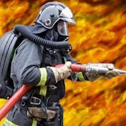
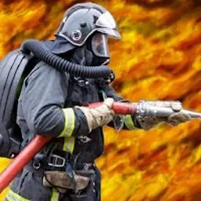

ОПиПАСР
Кафедра организации пожаротушения и проведения аварийно-спасательных работ
 

Ежегодно на кафедре осуществляют подготовку и защиту дипломных проектов (работ) от 100 до 150 выпускников. Результаты дипломного проектирования, имеющие практическую значимость и рекомендованные государственной экзаменационной комиссией, запрашиваются комплектующими органами ФПС ГПС МЧС России и внедряются в практическую деятельность гарнизонов пожарной охраны РФ.
В настоящее время штатная численность профессорско-преподавательского состава кафедры составляет 17 человек (укомплектованность личным составом 98 %). Из них 2 человека имеют звание доктор технических наук, профессор; 1 – звание кандидат технических наук, доцент; 2 – звание кандидат технических наук; 1 – звание кандидат экономических наук, доцент; 1 – звание кандидат педагогических наук, доцент, 1 – доцент.